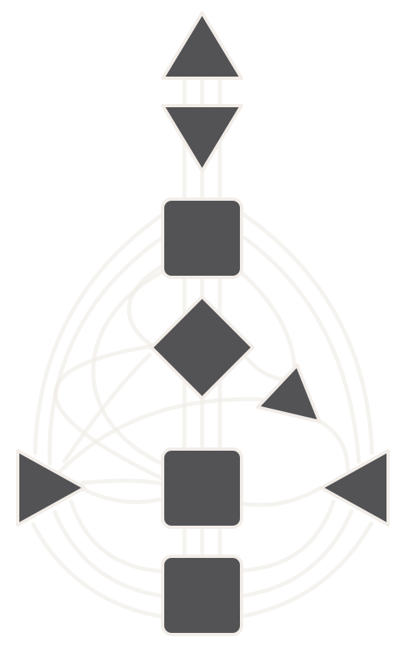

14 gates · mystery made tangible
Magic within the Human Design Gates
Some parts of Human Design feel less like a neat description and more like a doorway: intuition, pattern recognition, creativity, sensitivity, provocation, transformation. These 14 gates are invitations to explore that magic without turning the chart into mythology.
Information → Awareness → Embodiment.
What keeps you from living the gifts you recognise?
Bring the situation where you keep doubting, suppressing or overriding yourself. Together, we identify the conditioning at work and what you want to change.

The 14 gates
Choose a gate to read its gift, its shadow, and a ritual to bring it into your own experience.
Information → Awareness → Embodiment.
You’ve read about the gifts. You’re starting to recognise them in yourself. Now comes living them—and working through the conditioning that gets in the way.
Book your Deconditioning AuditNot ready for a deep dive?
Join us inside Human Design ReDefined Lab. Put what you’re learning into practice, work with your patterns, and bring your questions into the room.
Your first week is on me. Then $49 USD/month.